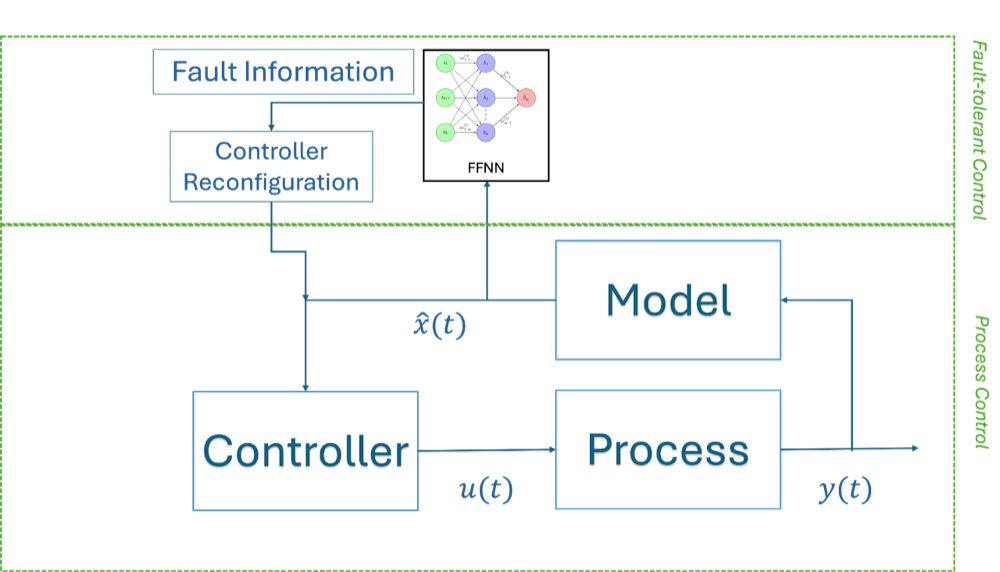

MS Thesis

My master's thesis builds a framework for catching and correcting sensor faults in chemical plants in real time, especially when multiple sensors fail at once. Neural networks estimate how far off a faulty sensor's reading is, and that estimate feeds into a model-based controller that adjusts itself to keep the process stable despite the bad data.
I built this first for a single process unit, then extended it to networks of interconnected units, comparing a centralized approach (one estimator sees everything) against a decentralized one (each unit only sees its own data). The centralized version performed substantially better when multiple units failed at once, a concrete case for centralized monitoring in plants made up of many connected units.